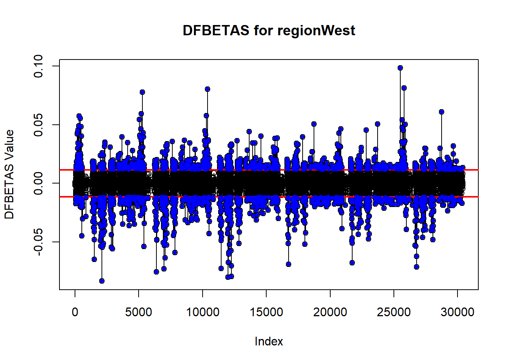

For decades, a secondary education has been considered the gold standard for ensuring a comfortable career and wage. In recent years however, it is becoming more and more difficult for recent graduates to find careers corresponding to their area of expertise, and therefore the wages that go with it.
We decided upon this topic as an important area of study due to the relevance of career prospects in our own lives as well as society at large. Our data is from an inbuilt RStudio package, causaldata, and originally contained 8 columns and 48445 observations, but after the removal of NA values it is reduced to 30401 data points.
Our outcome of interest is the median income of college graduates (earnings_med), while our predictors of interest are the type of degree awarded to each graduate (pred_degree_awarded_ipeds), the number of graduates actively working (count_working), those not working (count_not_working), year of data collection, and region of residence. The year, count working, and count not working variables are classified as discrete numeric values, and the degree awarded and region predictors are considered categorical. Degree awarded has 3 different observations: 1 indicates granting a less-than-two-year degree, 2 designates primarily awarding two-year degrees, and 3 denoting a typical four-year bachelor’s degree or greater.
Our second predictor, year, contains data for 2007 until 2016, but upon the omission of NA values it primarily encompasses years from 2007 to 2014. The region variable was one that we generated from state level data for ease of analysis, and it is broken down into Northeast, North Central, South, and West. Through an exploration of the relationships between our selected predictors and median earnings, our goal is to develop a robust and effective model for forecasting the monetary outcomes associated with various types of college degrees earned across the United States.
# all of our packageslibrary(causaldata)
Warning: package 'causaldata' was built under R version 4.3.2
library(datasets)library(tidyverse)
── Attaching core tidyverse packages ──────────────────────── tidyverse 2.0.0 ──
✔ dplyr 1.1.2 ✔ readr 2.1.4
✔ forcats 1.0.0 ✔ stringr 1.5.0
✔ ggplot2 3.4.3 ✔ tibble 3.2.1
✔ lubridate 1.9.2 ✔ tidyr 1.3.0
✔ purrr 1.0.2
── Conflicts ────────────────────────────────────────── tidyverse_conflicts() ──
✖ dplyr::filter() masks stats::filter()
✖ dplyr::lag() masks stats::lag()
ℹ Use the conflicted package (<http://conflicted.r-lib.org/>) to force all conflicts to become errors
library(ggfortify)library(MASS)
Attaching package: 'MASS'
The following object is masked from 'package:dplyr':
select
library(pheatmap)
Warning: package 'pheatmap' was built under R version 4.3.2
library(car)
Loading required package: carData
Attaching package: 'carData'
The following object is masked from 'package:causaldata':
Mroz
Attaching package: 'car'
The following object is masked from 'package:dplyr':
recode
The following object is masked from 'package:purrr':
some
library(lmtest)
Loading required package: zoo
Attaching package: 'zoo'
The following objects are masked from 'package:base':
as.Date, as.Date.numeric
library(splines)library(reshape2)
Warning: package 'reshape2' was built under R version 4.3.2
Attaching package: 'reshape2'
The following object is masked from 'package:tidyr':
smiths
library(interactions)
Warning: package 'interactions' was built under R version 4.3.2
library(boot)
Attaching package: 'boot'
The following object is masked from 'package:car':
logit
library(simpleboot)
Simple Bootstrap Routines (1.1-7)
library(emmeans)# the functions used in multiple placespredict_loo <-function(model) {y <-model.frame(model)[,1]loo_r <-residuals(model) / (1-hatvalues(model))return(y - loo_r)}rsq_loo <-function(model) {y <-model.frame(model)[,1]yhat <-predict_loo(model)return(cor(y, yhat)^2)}p_print <-function(object){print(deparse(substitute(object)))print(object)}as.numeric.l <-function(list){if(is.factor(list)){ list <-as.numeric(list) }return(list)}## cleaning# making region match which region the state is inscorecard$region <- state.region[match(scorecard$state_abbr, state.abb)]# making the degree a factorscorecard$degree <-as.factor(scorecard$pred_degree_awarded_ipeds)scorecard <-na.omit(scorecard)
Research Questions
To effectively determine the impact of count working, count not working, year, degree awarded, and region on the median earnings of college graduates, we outlined three research questions as a framework for our analysis:
1. Does median income have a positive relationship with the proportion of working graduates?
\(H_0\): Median income will have a positive relationship with the number of working graduates.
\(H_A\): positive relationship and significant p-value will prove this to be true.
2. Which US region contributes most to median earnings?
\(H_0\): All regions do not differ significantly for median earnings
\(H_A\): Eastern region will be the most significant in median earnings compared to other regions.
3. Which degree length leads to higher median salary?
\(H_0\): Median salary does not significantly differ between degree lengths.
\(H_A\): People with 4 year degrees have higher median salaries compared to other degre
Data Exploration
The purpose of this project is to analyze a potential relationship between college graduates in the US and median earnings based on year, region, degree length, and working status. Firstly, NA values were removed from the data set. States were grouped into regions using the state.region() base R function, and the degree length was converted to a factor with levels for simplified analysis. Additional tidying was performed utilizing gather(), where “employment_status” was created with the paired variable “working” listing the number of graduates either currently working or not working. The following is a brief analysis of trends among selected predictors (year, employment_status (count_working and count_not_working), degree, and region) and median earnings (earnings_med).
Manipulate Data
# Organize states into regions scorecard$region <- state.region[match(scorecard$state_abbr, state.abb)]scorecard <-na.omit(scorecard)# Change variable name to 'degree'scorecard = scorecard %>%mutate(degree =as.factor(pred_degree_awarded_ipeds))glimpse(scorecard)
A constructed boxplot illustrates trends in median earnings for graduates based on the US region. Graduates situated in the Northeastern US have the highest median of earnings while the South has the lowest median earnings. Both the North central and western US have similar median earnings; however, western and northeastern states have a much wider distribution of earnings than southern and the North central states. Northeastern states may have higher median earnings because of an increased concentration of “prestigious” universities (ex. Ivy League) in this region. There may be a “higher” quality of education that is more sought after for employment within this region. This observation, however, requires additional investigation.
# Plot for Graduate Median Earnings Based on Regionscorecard %>%ggplot(aes(x = region, y = earnings_med, fill = region)) +geom_boxplot() +labs(title ="Graduate Median Earnings Based on Region",x ="Region",y ="Median Earnings" ) +scale_fill_brewer(palette ="Set2") +theme_minimal()
# Plot for Median Earnings Based on Regionscorecard %>%ggplot(aes(x = earnings_med, fill = region)) +geom_histogram(bins =35, col ="black") +facet_grid(~region) +labs(title ="Median Earnings Based on Region",x ="Median Earnings") +facet_grid(~region) +theme_minimal()
Employment Status vs. Median Earnings
A scatter plot was utilized to determine the distribution of median earnings for graduates based on working status. As seen in the rightmost scatter plot, there are more working graduates than those who do not work; there are notable extremes for count_working, where at least two data points indicate more than 7,500 working graduates. Working graduates seem more numerous and spread out for median earnings compared to those who did not work. Surprisingly, working and non-working graduates seem to have similarly distributed median earnings; this goes against an assumption that working graduates would have higher median salaries than those who do not work.
# Create a new dataframe with tidy long performed on status of workscorecard1 <- scorecard %>%gather(key ="employment_status", value ="working", c(count_not_working, count_working)) scorecard1 <- scorecard1 %>%mutate(employment_status =as.factor(employment_status))# Plot for Median Earnings of Graduates Based on Employment Statusscorecard1 %>%ggplot(aes(x = working, y = earnings_med, color = employment_status)) +geom_point() +facet_grid(~employment_status) +labs(title ="Median Earnings of Graduates Based on Employment Status",x ="Number of Graduates",y ="Median Earnings") +scale_color_brewer(palette ="Dark2", name ="Employment Status", labels =c("Not Working", "Working")) +theme_minimal() +theme(legend.position ="top") +geom_smooth(method ="lm", linetype ="dashed", color ="black")
`geom_smooth()` using formula = 'y ~ x'
Degree Length vs. Median Earnings
It was expected that the longer the degree length, the higher the median earnings for graduates. Those who completed an undergraduate degree or pursued further education (ex. graduate school) earned much more than those who did not; the median earnings for this group are higher, and there is more spread for median earnings. This visually supports the observation that graduates with at least an undergraduate degree or additional completed schooling have a higher chance of employment because academic and professional skills may be more developed for a selected profession. As such, preference may be given for graduates with an undergraduate degree or higher education status compared to those who have two or less years of completed education.
# Plot for Median Earnings of Graduates Based on Degree Lengthscorecard1 %>%ggplot(aes(x = degree, y = earnings_med, fill = degree)) +geom_boxplot() +labs(title ="Median Earnings of Graduates Based on Degree Length",x ="Degree Length", y ="Median Earnings") +theme_minimal() +scale_fill_discrete(labels=c('Less than 2 years', 'Two years', '4+ years')) +scale_x_discrete(labels =c('Less than 2 years', 'Two years', '4+ years'))
Year vs. Median Earnings
Median earnings based on years did not frequently change, and years 2009 and 2011 saw at least one visible outlier among graduates for more than $150,000 earned. Because yearly data for 2008 and post 2014 was omitted due to missing information, the yearly earnings distribution may not be reflective of additional years. However, the trends in the box plot indicate that median earnings generally decreased after 2009; this may indicate a response to economic effects. Additional research is required to further investigate this observation.
# changing year to a factorscorecard1$year_level <-as.factor(scorecard1$year)# Plot for Median Earnings of Graduates 2007 - 2014scorecard1 %>%ggplot(aes(x = year_level, y = earnings_med, fill = year_level)) +geom_boxplot() +labs(title ="Median Earnings of Graduates 2007 - 2014",x ="Year", y ="Median Earnings") +theme_minimal()
Correlations
A correlation matrix was generated to visualize correlations between selected numeric variables.The highest correlation was found to be between count_working and count_not_working at 0.97. This is trivial since the number of graduates that are able to find work directly influences the number of graduates that remained non-working. The magnitudes of all other correlation factors were below 0.25, suggesting the variables have a quite weak relationship.
# getting year as a numericscorecard$year_num <-as.numeric(scorecard$year)# getting the heat map for the year, earnings_med, count_not_working, count_workingscorecard_cor <-cor(na.omit(scorecard[,c(5, 6, 7, 8)]))pheatmap(scorecard_cor,treeheight_col =0,treeheight_row =0,display_numbers =TRUE,breaks =seq(-1, 1, length =101))
Multiple Linear Regression Model
To assess for the presence of a predictive relationship between the median earnings of individuals graduating from colleges and universities across the United States and characteristics associated with their alma mater and post college lives, we constructed a linear model regressing median earnings on surveyed universities’ regional location, the number of alumni both employed and not working (not necessarily un-employed), the primary degree awarded, and the year that each survey was conducted.
Call:
lm(formula = earnings_med ~ region + degree + year + count_not_working +
count_working, data = scorecard)
Residuals:
Min 1Q Median 3Q Max
-33245 -5048 -660 3946 130337
Coefficients:
Estimate Std. Error t value Pr(>|t|)
(Intercept) 5.034e+05 4.173e+04 12.06 <2e-16 ***
regionSouth -4.613e+03 1.364e+02 -33.82 <2e-16 ***
regionNorth Central -3.651e+03 1.456e+02 -25.07 <2e-16 ***
regionWest -1.761e+03 1.552e+02 -11.35 <2e-16 ***
degree2 5.892e+03 1.220e+02 48.30 <2e-16 ***
degree3 1.567e+04 1.198e+02 130.82 <2e-16 ***
year -2.359e+02 2.075e+01 -11.37 <2e-16 ***
count_not_working -8.859e+00 2.397e-01 -36.97 <2e-16 ***
count_working 1.555e+00 3.766e-02 41.29 <2e-16 ***
---
Signif. codes: 0 '***' 0.001 '**' 0.01 '*' 0.05 '.' 0.1 ' ' 1
Residual standard error: 8373 on 30392 degrees of freedom
Multiple R-squared: 0.4928, Adjusted R-squared: 0.4927
F-statistic: 3691 on 8 and 30392 DF, p-value: < 2.2e-16
cat("Earnings median range:", range(scorecard$earnings_med))
Earnings median range: 8400 171900
The substantial F-statistic generated by the linear model of 3691 on 8 and 30392 degrees of freedom allowed us to reject the null hypothesis that none of the chosen variables possess any relationship to median earnings (all slopes are equal to zero) in favor of the alternative hypothesis that at least one of the predictive variables influences the earnings of American college graduates (at least one slope is not equal to zero).
Given the confirmation of, at minimum, one of our independent variables’ predictive power, we further explored the more nuanced ways in which each contributed to variation from the baseline predicted income of $503,340, as denoted by the intercept regression coefficient. Holding the influence of region, degrees typically awarded, year, and the number of graduates not actively employed constant, a one person increase in the number of gainfully employed graduates contributed to an institution results in a marginal $1.56 increase in predicted median earnings. Conversely, when controlling for the effect of all other predictors, the addition of a single non-working alumni unsurprisingly elicits a predicted $8.86 decline in predicted income. Assessment of the regression coefficient assigned to the year variable in the same manner revealed a slightly more impactful association between the year participants were surveyed and median earnings, with the passage of one year resulting in a loss of $235.90.
Due to the categorical nature of the predominant degree awarded by collegiate study participants and the region in which each institution of higher learning resides, the analysis of their influence on predicted monetary outcomes diverged from that of aforementioned variables. As a hub for a variety of prestigious Universities, we anticipated that graduates from Northeastern schools would likely possess the highest median earnings and we accordingly designated it as the reference for our analysis of regional impacts. When controlling for the effects of all other variables and regions, prior attendance of a Southern school resulted in an average median earnings reduction of $4,613 from the Northeastern baseline. Upon similar evaluation, graduation from North Central and Western colleges comparably resulted in an average loss of $3,651 and $1,761, respectively.
In considering the impact of the predominant degree awarded we identified the widest range of variation between predicted monetary outcomes, with the reference of less than 2 years differing by ample amounts than the deviations observed between the regional categories. Controlling for all other variables and education levels, completion of a 2 year degree improved average predicted median income by $5,892, while graduation with a bachelor’s degree raised income by an average of $15,670 after comparison to the baseline.
Though all of the regression coefficients for both numeric and categorical variables possessed p-values significant at the zero level (p <2*10-16), the multiple R2 value of 0.498 indicates that only approximately 50% of the variation observed in median earnings for those surveyed is accounted for by the collegiate attributes analyzed above. This is reflected by the substantial residual standard error of 8373 on 30,392 degrees of freedom, meaning that the predicted values produced by the linear model deviate from actual monetary outcomes by an average of $8373. When compared to both the regression coefficients and the overall range of the actual median earnings values ($8604-$171900), the level of error observed in the estimates produced by the model is concerning and likely indicative of improper model fit through overfitting or multicollinearity.
Improving the Model
Setting Up to Analyze the Models
results <-data.frame()analyze_model <-function(model){# testing the if errors zero on-average# closer to zero is good resid_avg_zero_test <-t.test(resid(model), mu=0)# testing for constant variance# closer to zero is better heteroscedasticity_test <-bptest(model)# used for checking for overfitting#higher LOOR2 is better but R2 being much greater than LOOR2 indicates overfitting LOOR2 <-rsq_loo(model) R2 <-summary(model)[["r.squared"]]# Ensure the types are compatible model_call_str <-as.character(paste(deparse(model$call), collapse =" ")) resid_statistic <-as.numeric(resid_avg_zero_test$statistic) errors_zero_is_pass <-resid_avg_zero_test$p.value > .05 bp_statistic <-as.numeric(heteroscedasticity_test$statistic) constant_variance_is_pass <- heteroscedasticity_test$p.value > .05 loor2_value <-as.numeric(LOOR2) r2_value <-as.numeric(R2)# Append the new row new_row <-data.frame(model=model_call_str, t=resid_statistic, errors_zero_is_pass, bp=bp_statistic, constant_variance_is_pass=constant_variance_is_pass, R2=r2_value, LOOR2=loor2_value)# Making sure that the results are actually getting added results <<-rbind(results, new_row)}
Our Basic model is earnings_med ~ region + degree + year + count_not_working + count_working. It had an \(R^2\) of 0.493; this indicates that 49.3% of the variance of the data was accounted for by our model. The basic model has a Residual Standard Error (RSE) of $8372.924; this indicates that the average error of the basic model for all points is ~$8372.924 (the predicted values are on average off from the expected values by $8372.924).
The F-test for the Basic model compares two hypotheses: the null hypothesis suggests that a simple intercept-only model is sufficient, while the alternative hypothesis argues that the Basic model is a better fit. Given that the overall p-value is 0, which is below the threshold for statistical significance, we reject the null hypothesis. This means the Basic model is more appropriate for this data than the intercept-only model.
autoplot(earnings_lm)
t.test(resid(earnings_lm), mu=0)
One Sample t-test
data: resid(earnings_lm)
t = 2.3435e-14, df = 30400, p-value = 1
alternative hypothesis: true mean is not equal to 0
95 percent confidence interval:
-94.11123 94.11123
sample estimates:
mean of x
1.125238e-12
bptest(earnings_lm)
studentized Breusch-Pagan test
data: earnings_lm
BP = 855.68, df = 8, p-value < 2.2e-16
In the diagnostic analysis of the basic model, the primary concern identified was the assumption of normality. The plots of residuals versus fitted values suggested ambiguity in confirming the mean-zero assumption. To clarify, a t-test on the residuals was conducted. The resulting p-value of 1 implies insufficient evidence to reject the null hypothesis, suggesting that the residuals are, on average, mean-zero.
Next, the assumption of constant variance was evaluated. Initial observations from the plot indicated homoscedasticity. However, a subsequent Breusch-Pagan test yielded a p-value significantly less than 2.2e-16. This result leads to the rejection of the null hypothesis of homoscedasticity, indicating the presence of heteroscedasticity in the model.
The final assumption under scrutiny is normality. The qqplot reveals clear deviations, with the data straying significantly from the expected 1-1 line, indicating issues with normality. However, given the substantial volume of data in the model, some might contend that the normality concern is less critical.
Accessing Log Transformation
Given that the primary issue with the model is with constant variance, we will attempt a log transformation.
log_model <-lm(log(earnings_med) ~ region + degree + year + count_not_working + count_working, data = scorecard)analyze_model(log_model)log_summary <-summary(log_model)R2 <- log_summary[["r.squared"]]RSE <- log_summary$sigmaP.value <-pf(log_summary$fstatistic[1],log_summary$fstatistic[2],log_summary$fstatistic[3], lower.tail =FALSE)print(cbind(`R2`, `RSE`, `P.value`))
R2 RSE P.value
value 0.5029592 0.2434349 0
A log-dependent transformation was applied, resulting in the model: log(earnings_med) ~ region + degree + year + count_not_working + count_working. This transformation yielded a marginally improved \(R^2\) value of 0.503. The model’s RSE is 0.243, indicating that the predicted values deviate on average by \(e^{0.243}\) from the expected values. The F-test for the Log Model, similar to that of the Basic model, compares an intercept-only model against the Log model. With a p-value of 0, the null hypothesis is rejected, suggesting that the Log model is more suitable for this data than the intercept-only model.
autoplot(log_model)
t.test(resid(log_model), mu=0)
One Sample t-test
data: resid(log_model)
t = -3.3357e-14, df = 30400, p-value = 1
alternative hypothesis: true mean is not equal to 0
95 percent confidence interval:
-0.002736196 0.002736196
sample estimates:
mean of x
-4.656564e-17
bptest(log_model)
studentized Breusch-Pagan test
data: log_model
BP = 1597, df = 8, p-value < 2.2e-16
For the Log model, the p-value is 1, providing insufficient evidence to reject the null hypothesis and suggesting that the residuals are mean-zero, similar to the Basic model. In terms of constant variance, the Log model’s p-value is significantly below 2.2e-16. Moreover, the Log model displays a higher Breusch-Pagan statistic (1597) compared to the Basic model (855.68), indicating stronger evidence of heteroscedasticity.
While the Log model shows improvement in normality, this assumption is often considered less critical, leading to a perspective that its improvement is not significant.
Given the importance of assumptions, especially constant variance, which is more significantly violated in the Log model as indicated by both plot and test, the log transformation is deemed not beneficial for use in this context.
Evidence Supporting the Inclusion of A Spline
# testing variations of splines on count_not_working and count_working from 2:10for(k in2:10){ formula_str <-sprintf("lm(earnings_med ~ region + degree + year + ns(count_not_working, df=%d) + ns(count_working, df=%d), data=scorecard)", k,k) spine_both_model <-eval(parse(text = formula_str))analyze_model(spine_both_model)}
# the best model in later analysis was the 10 modelspine_both_model <-lm(earnings_med ~ region + degree + year +ns(count_not_working, df=10) +ns(count_working, df=10), data=scorecard)spine_summary <-summary(spine_both_model)R2 <- spine_summary[["r.squared"]]RSE <- spine_summary$sigmaP.value <-pf(spine_summary$fstatistic[1],spine_summary$fstatistic[2],spine_summary$fstatistic[3], lower.tail =FALSE)print(cbind(`R2`, `RSE`, `P.value`))
R2 RSE P.value
value 0.6557087 6900.643 0
autoplot(spine_both_model)
t.test(resid(spine_both_model), mu=0)
One Sample t-test
data: resid(spine_both_model)
t = 3.257e-14, df = 30400, p-value = 1
alternative hypothesis: true mean is not equal to 0
95 percent confidence interval:
-77.5399 77.5399
sample estimates:
mean of x
1.288492e-12
bptest(spine_both_model)
studentized Breusch-Pagan test
data: spine_both_model
BP = 1912.2, df = 26, p-value < 2.2e-16
Upon assessing natural splines with degrees of freedom ranging from 2 to 10 for count_not_working and ‘count_working’, the optimal model identified was: lm(earnings_med ~ region + degree + year + ns(count_not_working, df=10) + ns(count_working, df=10)). Despite its merits, this model, similar to the log model, exhibits too many drawbacks to outweigh its benefits. The t-test results confirm that the true mean is zero, and the F-test shows this spline model is superior to an intercept-only model. However, the model demonstrates an even more pronounced issue with constant variance, as evidenced by a Breusch-Pagan statistic of 1912.2, suggesting a greater degree of heteroscedasticity compared to the log model. Consequently, due to these significant issues in critical aspects, the use of the spline model is not justified, despite its advantages in less crucial areas.
Interpret Interaction
A possible interaction that could exist in the model is between count_not_working and count_working. The plot of Median Earnings of Graduates Based on Employment Status shows that the two slopes are expected to overlap which is a typical indicator for interaction.
One Sample t-test
data: resid(count_year_int_model)
t = -4.3793e-14, df = 30400, p-value = 1
alternative hypothesis: true mean is not equal to 0
95 percent confidence interval:
-93.95409 93.95409
sample estimates:
mean of x
-2.099209e-12
bptest(count_year_int_model)
studentized Breusch-Pagan test
data: count_year_int_model
BP = 945.38, df = 9, p-value < 2.2e-16
The chosen intercept model, lm(earnings_med ~ region + degree + (count_not_working * count_working) + year, exhibits issues similar to those in the Log and Spline models. This model does not significantly improve upon the Basic model in terms of \(R^2\) or RSE. Like the other models, its F-test results suggest it is more effective than an intercept-only model. The t-test for mean-zero residuals yields a p-value of 1, affirming the mean-zero assumption. However, it closely aligns with the Basic model regarding the Breusch-Pagan statistic, with a value of 945.38 compared to 855.68 for the Basic model. Yet, like the previous two models, its shortcomings, mainly significant errors, outweigh its benefits, making it unsuitable for drawing conclusions.
The interpretation of interaction in this model is as follows: for each unit increase in ‘count_not_working’, the slope of ‘count_working’ is altered by -1.567e-05, assuming all other variables are held constant.
Extra analysis
The following is an extra analysis of the results of each model analyzed showing the results of all of their mean zero assumptions and how they compare for LOOR2 and BP.
# Create a transformation for 'LOOR2'max_bp <-max(results$bp, na.rm =TRUE)max_LOOR2 <-max(results$LOOR2, na.rm =TRUE)scale_factor <- max_bp / max_LOOR2# Apply the unified scaling to both LOOR2 and R2results$LOOR2_scaled <- results$LOOR2 * scale_factor# Update melting to include both scaled LOOR2 and R2long_results <-melt(results, id.vars ="row_names", measure.vars =c("bp", "LOOR2_scaled"))# Update variable names for the legendlong_results$variable <-factor(long_results$variable, labels =c("BP", "Scaled LOOR2"))# Plotggplot(long_results, aes(x = row_names, y = value, fill = variable)) +geom_bar(stat ="identity", position =position_dodge(width =0.7)) +scale_fill_manual(values =c("BP"="#87CEFA", "Scaled LOOR2"="#FF6A6A")) +scale_y_continuous("BP", sec.axis =sec_axis(~ . / scale_factor, name ="Scaled LOOR2")) +theme(axis.text.x =element_text(angle =90, hjust =1)) +ggtitle("BP and Scaled LOOR2 for each model") +labs(x ="Row Names", y ="BP Value", fill ="Variable")
Formal Hypothesis Tests
To begin the project, we wanted to investigate how the number of working graduates (count_working), region of the university (region), and degree type (degree) relate to the median income of graduates (earnings_med). In this section, we tested if each of these three variables are significant in predicting the median income. Firstly, we used the following equation to represent the relationship between median earnings and the chosen predictors: \[
Y = \beta_0 + \beta_{r_1}X_{r_1} + \beta_{r_2}X_{r_2} + \beta_{r_3}X_{r_3} + \beta_{d_1}X_{d_2} + \beta_{d_2}X_{d_2} + \beta_yX_y + \beta_nX_n + \beta_wX_w + \epsilon
\] Where: \(Y\) = earnings_med , \(X_r\) = region, \(X_d\) = degree, \(X_y\) = year, \(X_n\) = count_not_working, and \(X_w\) = count_working Using our final model, earnings_lm, we performed the following hypotheses testing:
Using the p-values from the drop1 function, we see that \(\beta_r\), \(\beta_g\), and \(\beta_w\) are all significant predictors of earnings_med.
drop1(earnings_lm, test ="F")
Single term deletions
Model:
earnings_med ~ region + degree + year + count_not_working + count_working
Df Sum of Sq RSS AIC F value Pr(>F)
<none> 2.1307e+12 549219
region 3 9.3190e+10 2.2238e+12 550514 443.09 < 2.2e-16 ***
degree 2 1.2069e+12 3.3375e+12 562859 8607.45 < 2.2e-16 ***
year 1 9.0561e+09 2.1397e+12 549346 129.18 < 2.2e-16 ***
count_not_working 1 9.5798e+10 2.2265e+12 550554 1366.48 < 2.2e-16 ***
count_working 1 1.1952e+11 2.2502e+12 550876 1704.88 < 2.2e-16 ***
---
Signif. codes: 0 '***' 0.001 '**' 0.01 '*' 0.05 '.' 0.1 ' ' 1
Furthermore, using the summary functions we see that \(\beta_{r_1}\), \(\beta_{r_2}\), \(\beta_{r_3}\), \(\beta_{d_1}\), and \(\beta_{d_2}\) are all significant predictors of \(Y\). We therefore reject H_0 for both region and degree and conclude that median income changes based on the regional location of the college and the type of degree the college offers. Also, we see that there is significant evidence that \(\beta_w\) is positive (which confirms our hypothesis in Part 1). We therefore reject \(H_0\) for the count_working variable and conclude that median earnings tend to increase as the number of working graduates increases.
summary(earnings_lm)
Call:
lm(formula = earnings_med ~ region + degree + year + count_not_working +
count_working, data = scorecard)
Residuals:
Min 1Q Median 3Q Max
-33245 -5048 -660 3946 130337
Coefficients:
Estimate Std. Error t value Pr(>|t|)
(Intercept) 5.034e+05 4.173e+04 12.06 <2e-16 ***
regionSouth -4.613e+03 1.364e+02 -33.82 <2e-16 ***
regionNorth Central -3.651e+03 1.456e+02 -25.07 <2e-16 ***
regionWest -1.761e+03 1.552e+02 -11.35 <2e-16 ***
degree2 5.892e+03 1.220e+02 48.30 <2e-16 ***
degree3 1.567e+04 1.198e+02 130.82 <2e-16 ***
year -2.359e+02 2.075e+01 -11.37 <2e-16 ***
count_not_working -8.859e+00 2.397e-01 -36.97 <2e-16 ***
count_working 1.555e+00 3.766e-02 41.29 <2e-16 ***
---
Signif. codes: 0 '***' 0.001 '**' 0.01 '*' 0.05 '.' 0.1 ' ' 1
Residual standard error: 8373 on 30392 degrees of freedom
Multiple R-squared: 0.4928, Adjusted R-squared: 0.4927
F-statistic: 3691 on 8 and 30392 DF, p-value: < 2.2e-16
To further investigate the region and degree variables, we ran the respective contrast functions and found that income significantly varies between all regions as well as between all degree types which confirms our initial hypothesis stated in Part 1.
cat("Comparing median income between regions:", "\n")
contrast estimate SE df t.ratio p.value
Northeast - South 4613 136 30392 33.816 <.0001
Northeast - North Central 3651 146 30392 25.072 <.0001
Northeast - West 1761 155 30392 11.348 <.0001
South - North Central -962 126 30392 -7.644 <.0001
South - West -2852 135 30392 -21.172 <.0001
North Central - West -1890 145 30392 -12.998 <.0001
Results are averaged over the levels of: degree
cat("\n","Comparing median income between degrees:", "\n", sep ="")
contrast estimate SE df t.ratio p.value
degree1 - degree2 -5892 122 30392 -48.304 <.0001
degree1 - degree3 -15673 120 30392 -130.823 <.0001
degree2 - degree3 -9781 128 30392 -76.311 <.0001
Results are averaged over the levels of: region
In conclusion, based on our findings, all of our initial hypotheses seem to be confirmed. The median earnings seem to increase with the number of graduates that are able to find a job. The earnings also vary based on the degree type the graduate received and the geographic region of the US where the college is located. These conclusions do have serious limitations though. Firstly, our model contained only 5 predictors, all of which were found to be significant. However, the inclusion of more predictors can affect the trends of the model and change the significance of each of the original 5 predictors. It is also important to consider the possibility of the existence of confounding variables. For example, it is possible that graduates who go to elite colleges are more likely to both find a job and earn a higher wage. Along with this, some regions in the US, like the Northeast, tend to have many states with a significantly higher cost of living which can explain the difference in median earnings. It is also important to account for the fact that we performed multiple tests in this section, hence we adjusted our p-values using the Bonferroni correction. Firstly, for both region and degree variables, we repeated the pairwise comparisons using the Bonferroni adjusted p-values. In both cases, our conclusions did not change.
cat("Comparing median income between regions:", "\n")
contrast estimate SE df t.ratio p.value
Northeast - South 4613 136 30392 33.816 <.0001
Northeast - North Central 3651 146 30392 25.072 <.0001
Northeast - West 1761 155 30392 11.348 <.0001
South - North Central -962 126 30392 -7.644 <.0001
South - West -2852 135 30392 -21.172 <.0001
North Central - West -1890 145 30392 -12.998 <.0001
Results are averaged over the levels of: degree
P value adjustment: bonferroni method for 6 tests
Then, since we tested three separate sets of hypotheses, the resulting p-values had to be multiplied by a factor of 3 to perform the Bonferroni correction. However, in all three cases we ended up with a \(p-value < 2 * 10^{-16}\) so it follows that we still must reject \(H_0\) in all three cases.
(Intercept) regionSouth regionNorth Central regionWest
-2.1710506 -0.9982854 0.3423920 3.3755165
degree2 degree3 year count_not_working
-1.0003179 0.1723053 -2.1752181 -0.0797410
count_working
0.4101115
The resulting SEs and percent change from Basic SEs are shown above. The percent changes display that there are not significant changes except for regionNorth Central, where there is a percent change of -7.09%. This is still not a large change for the SEs.
plot(dffitts_values, type ='o', main ="DFFITS Values", xlab ="Index", ylab ="DFFITS Value")abline(h =c(-dffitts_thresh, dffitts_thresh), col ="red", lwd =2)dffitts_outlier_indices <-which(abs(dffitts_values) > dffitts_thresh)points(dffitts_outlier_indices, dffitts_values[dffitts_outlier_indices], col ="blue", pch =20)
for (i in1:ncol(dfbetas_values)) {plot(dfbetas_values[,i], type ='o', main =paste("DFBETAS for", colnames(dfbetas_values)[i]), xlab ="Index", ylab ="DFBETAS Value")abline(h =c(-dfbetas_thresh, dfbetas_thresh), col ="red", lwd =2) outlier_indices <-which(abs(dfbetas_values[,i]) > dfbetas_thresh)points(outlier_indices, dfbetas_values[outlier_indices, i], col ="blue", pch =20)}

As made blatant by the graphs for dffits and each dfbetas graph, there are many points that are highly influential. For the following analysis, it will only focus on the outliers found by dffitts so as not to bloat the outliers with points that do not truly affect the data.
# Preparing the plotting areapar(mfrow=c(1, 1))for (i in1:ncol(scorecard)) {# Extract the column name for labeling column_name <-colnames(scorecard)[i]# Identifying non-outlier indices non_outlier_indices <-setdiff(1:nrow(scorecard), dffitts_outlier_indices)# Calculate the common ylim for both non-outliers and outliers common_ylim <-range(scorecard[, "earnings_med"], na.rm =TRUE)# Plotting for non-outliersplot(scorecard[non_outlier_indices, "earnings_med"] ~ (if(is.numeric(scorecard[non_outlier_indices, i])) scorecard[non_outlier_indices, i] elseas.factor(scorecard[non_outlier_indices, i])),main =paste("Non-Outliers: Earnings_med vs", column_name),ylab ="Earnings_med", xlab = column_name, pch =20, col ="grey",ylim = common_ylim)# Plotting for outliersplot(scorecard[dffitts_outlier_indices, "earnings_med"] ~ (if(is.numeric(scorecard[dffitts_outlier_indices, i])) scorecard[dffitts_outlier_indices, i] elseas.factor(scorecard[dffitts_outlier_indices, i])),main =paste("Outliers: Earnings_med vs", column_name),ylab ="Earnings_med", xlab = column_name, pch =46, col ="red",ylim = common_ylim)}
The range of non-outliers vs. outliers for earnings appears to be a large contributor to which points are outliers. The non-outliers are all contained inside [8500, 63600], while the outliers consist of [8400, 171900]. There are 1332 influential outliers and only 492 outside of the non_outlier range. meaning there are only 840 left that are not explained.
Examining all of the plots and comparing each variable to income, the blatant outliers appear in count_not_working and count_working, where those with higher values are typically outliers. For the variables region and degree, it appears that any outliers on the boxplots are also outliers for the data. The most interesting pattern appears for the institution name and state name.
state_abbr n
1 PA 164
2 NY 95
3 CA 81
4 MI 41
5 NJ 35
6 IL 30
7 MA 28
8 OH 25
9 VA 22
10 ME 21
11 TX 21
12 MO 19
13 VT 19
14 FL 17
15 WA 16
16 AZ 15
17 MN 15
18 MT 15
19 NC 15
20 GA 14
21 CO 13
22 IA 12
23 UT 11
24 OR 10
25 AR 9
26 CT 9
27 NM 8
28 MD 7
29 NE 7
30 TN 7
31 LA 6
32 NV 5
33 AL 4
34 IN 4
35 ID 3
36 ND 3
37 HI 2
38 NH 2
39 RI 2
40 SC 2
41 WI 2
42 WY 2
43 OK 1
44 WV 1
After looking at state after only including outliers that are within the income range of non_outliers, there are some states that have a lot more outliers than would be expected, even distribution against all of them: “PA” “NY” “CA” “MI” “NJ” “IL” “MA” “OH” “VA” “ME” “TX”. After filtering out these states, there are 563 left.
These determinations were all the influential outliers that could be identified for this dataset and model.
GVIF Df GVIF^(1/(2*Df))
region 1.020995 3 1.003469
degree 1.039036 2 1.009619
year 1.010920 1 1.005445
count_not_working 1.034970 1 1.017335
There is high multicollinearity between count_working and count_not_working. This is also indicated by the high vifs for each, 36.115252 and 36.561674, which are much greater than the typical threshold of 10. The 36 indicates the two variables are coupled and highly sensitive to changes in the model and data; they have much higher SE due to multicollinearity than true variance. Also, this means that whenever a prediction of count_not_working using all the other variables is attempted, it has a very high R^2, leading to \(\frac{1}{1-R^2}\) approaching 0 on the bottom and therefore infinity. Once one of the variables is removed, the variables become more balanced and within 1 of each other.
Conclusions
We rejected the null hypotheses of our initial analysis of the data in favor of our alternative hypotheses, which stated that median income differed due to the number of working graduates, region, or degree earned. Specifically, it seemed that median earnings increased with the number of working graduates, varied between U.S. regions, and varied between length of degree earned. However, inclusion of more predictors could affect the trends of the model, and there could be confounding variables which could be influencing the trends and results of the tests. We also found that the correlations between the variables are quite weak.
In fitting the model we found that not working and year are both significantly negatively associated with median income. We also found that when held against graduates of Northeastern schools, graduates of Southern, North Central, and Western schools all have decreased median income. When compared to graduates with a less-than-2-year degree, those with a 2 year degree and 4 or more year degree saw increased median earnings. This model however, saw that only about 50% of the variation observed in median earnings was accounted for, meaning that the model is likely improperly fit. We found that this was not due to the model being overfit, but that there was high multicollinearity between count_working and count_not_working.
In attempting to create a better fitting model, we attempted a log-dependant transformation, interaction model, and spline model. We found that the log-transformed model did not lessen the violation of the constant variance assumption, and therefore was not beneficial. The spline model and interaction model also proved to be non-beneficial.